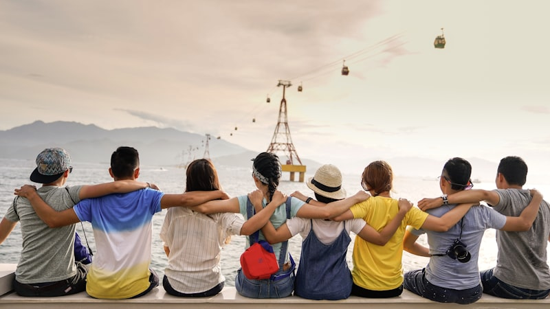

"A Second Family
for Every Senior."
Serving with dignity. Supporting with compassion. Standing by our seniors in Chakradharpur and Jamshedpur, Jharkhand.

About Laxmi Surbhi NGO
Laxmi Surbhi's Senior Care & Support Initiative is an effort dedicated to ensuring that senior citizens are not left feeling neglected, isolated, helpless or alone. We believe that growing older should never mean losing one's dignity, independence, companionship or sense of belonging.

Our Sacred Promise
We don't want seniors to feel that they are being "served" by an organisation. We want them to feel that they have gained a second family.
Tailored, Personalized Care
Our work is designed around the needs of each individual senior rather than providing a one-size-fits-all approach.
Dependable Support Network
Through a combination of companionship, community support, health assistance, engagement, awareness and practical support, we create a dependable ecosystem.
What We Can Provide
Based strictly on our official initiative framework, we provide 7 comprehensive areas of support for seniors and their families:

1. Companionship
Regular interaction, friendly visits, conversation, emotional support, and active listening to reduce loneliness and isolation.
Explore Area
2. Health & Wellness
Assistance in coordinating doctor appointments, wellness activities, health-awareness programmes, and medical linkages.
Explore Area
3. Well-Being Check-Ins
Regular phone calls, welfare check-ins, visits by authorised volunteers, and escalation to emergency contacts when necessary.
Explore Area
4. Social Engagement
Celebrations, games, cultural programmes, get-togethers, outings, festivals and special occasion gatherings.
Explore Area
5. Digital Support
Smartphone assistance, WhatsApp guidance, digital payments awareness, online appointment booking, and digital literacy.
Explore Area6. Safety & Awareness
Senior safety guidance, scam/fraud prevention awareness, emergency preparedness, and government welfare scheme linkage.
Explore AreaOur Verified Foundations
Trust is earned through transparency. We proudly operate under clear public registrations and community principles.
Serving communities with continuous dedication.
Legally documented non-governmental organisation.
Dual operating hubs in the state of Jharkhand.
Personalized assistance for everyday senior needs.
Let's Connect. Let's Serve. Let's Make A Difference.
Whether you are a senior citizen seeking support, a family looking for assistance, a volunteer willing to contribute, an organisation interested in collaboration, or someone who simply wants to support our mission—we would love to hear from you.